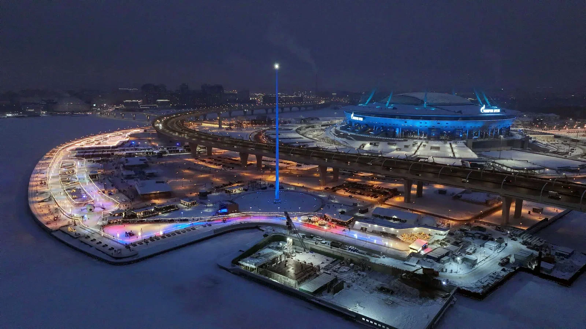
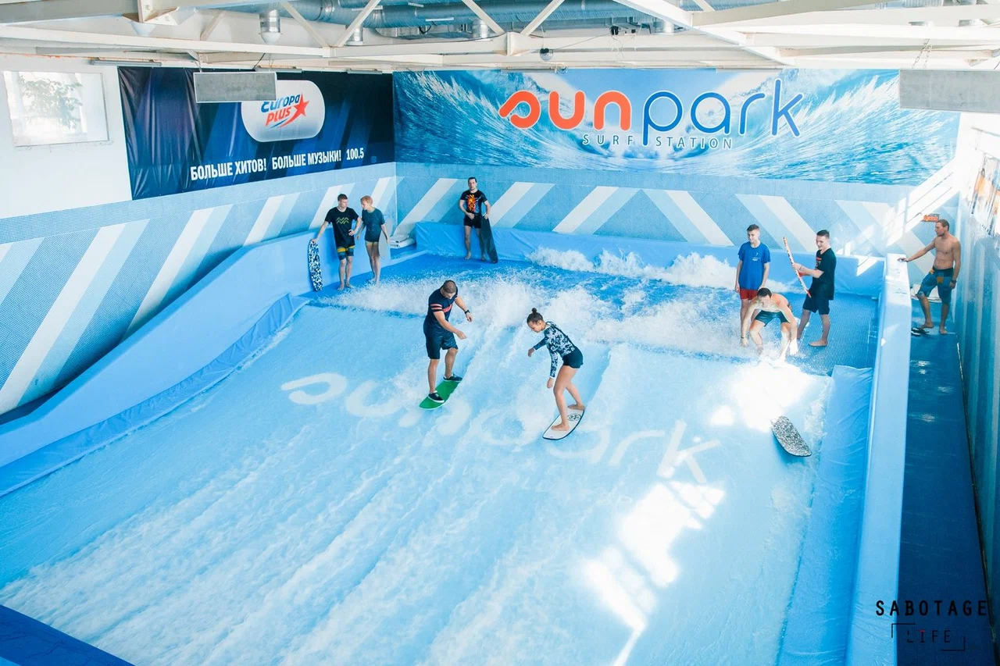

Каток у Флагштока
«Каток у Флагштока» — огромный ледовый городок и самый большой в мире искусственный каток на берегу Финского залива: атмосферная площадка, где можно покататься на коньках с завораживающим видом на море, «Лахта Центр» и стадион «Газпром Арена» (летом пространство работает как роллердром и бассейн).
Адрес: Санкт‑Петербург, Южная дорога, д. 28, ст. метро «Зенит».
Контакты: flagshtock.ru/katok
Режим работы: Сезонный (с ноября по март). Посещение разбито на сеансы по 1,5–2 часа, утренние сеансы бывают бесплатными.
Средний чек: Входной билет — от 250 до 800 рублей (зависит от дня и времени), прокат коньков — 400 рублей.

SURF CLUB SPB
«SURF CLUB SPB» — современный спортивно-развлекательный центр водных видов спорта в Санкт‑Петербурге: один из первых в стране круглогодичных спотов с искусственной волной для флоубординга, а также летней базой для вейксёрфинга за мощным профессиональным катером.
Адрес: Санкт‑Петербург, ул. Благодатная, д. 63, корп. 1Д, ст. метро «Электросила» / «Международная».
Контакты: +7 (921) 906 16 75 или surfclubspb.ru.
Режим работы: Будни — с 18:00 до 01:00, выходные — с 10:00 до 01:00 (посещение только по предварительной записи).
Средний чек: от 5 000 рублей за двоих.
